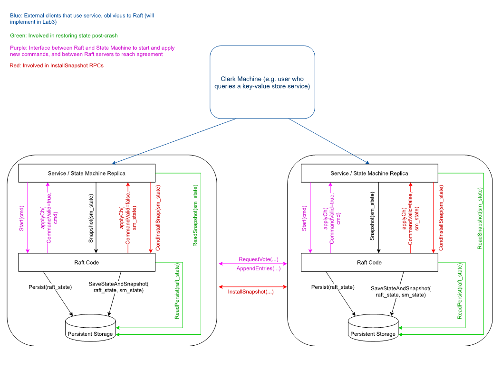

Lab 2C
实验2C要求实现Raft服务器currentTerm、votedFor和log三个状态的持久化，难度不高，只需要填充相应函数，并在每次回复RPC之前和这三个状态被修改之后调用持久化函数。
但实验2C的测试还是有可能因为2A、2B的实现不完善而发生错误。
我在测试时多次碰到该错误：
— FAIL: TestFigure8Unreliable2C (41.85s)
config.go:609: one(5768) failed to reach agreement
经过调试和查阅资料，发现了之前实验的两个错误实现：
- 在AppendEntries RPC当中直接将prevLogIndex之后的所有条目截断。当领导者向参与者发送的AppendEntries请求过期，其中包含的日志条目是参与者日志条目的子集的时候，这种实现会导致参与者的一部分正确日志被舍弃。正确的实现方法是严格按照论文，只截断冲突的日志。
- 原实现中，领导者收到AppendEntries的成功响应之后会执行
nextIndex += len(args.Entries)。然而领导者在发送RPC之前已经释放了互斥锁，其nextIndex有可能被修改。正确实现应该是nextIndex = prevLogIndex + len(args.Entries) + 1。
此外，还进行了下列优化，顺利一次性通过了2A、2B、2C：
TIME_STEP设为10ms，原实现与心跳超时相同。
选举超时设为[300, 450]ms，心跳超时设置为50ms。
Lab 2D
实验2D要求实现快照功能。
实验官网的Hint给出了实现思路，按照思路，第一步是实现日志下标不从0开始存储。在我之前的实验中，日志下标以条目中的CommandIndex字段为准，故不需要做太多的修改。我原本的思路是在Raft状态中新增lastIncludedIndex和lastIncludedTerm两个字段，后来发现直接使用rf.log[0].CommandIndex和rf.log[0].CommandTerm来存储可以避免许多判断。
然而当我实现了第一步之后再去跑2C的测试时，发现总是会发生apply不一致或者不能reach agreement的错误，经过一番调试之后最终发现是AppendEntries()当中一个if的判断条件写错了，把args.Entries的长度写成了rf.log的长度。。。。。。。。。修改此bug后，顺利通过10次2C测试。
在跑2D的测试时发现另外的问题：当需要snapshot的时候，applyCh会阻塞，导致整个applyLogs线程阻塞。而由于applyLogs线程持有了互斥锁，因此整个服务器都会阻塞。解决方法是使用select语句：
1 | select { |
当case中的写通道指令被阻塞时，select会转而执行default分支。需要注意不能在default分支中写break来退出外层循环，break的作用范围仅限于select，应该使用goto。
实现日志的部分存储之后就可以着手开始实现Snapshot函数和InstallSnapshot RPC。实现前，要先理解Snapshot的指令和数据流向：上层应用在不需要前一部分的日志时，会调用Raft的Snapshot方法，其snapshot参数是上层应用已经创建好的快照。Snapshot方法需要做的是：截断日志，然后将快照snapshot持久化到持久性存储当中。当领导者发现某个参与者的nextIndex小于等于当前的lastIncludedIndex时，需要发送InstallSnapshot RPC，此时通过Persister.ReadSnapshot方法可从持久化存储中读取快照进行发送。
由config.go第247行还可以知道：snapshot字节数组使用labgob包编解码，首先包含lastIncludedIndex数值，然后顺序包含lastIncludedIndex及之前的所有日志条目。
Snapshot的函数调用关系比较难理解，需要参考Raft Diagram。
Service为使用Raft Code作为其一致性协议的上层应用，可以是K/V数据库等。
为了避免在Raft Code的内存中保留过长的日志条目，Service会定期将已经apply的一部分日志转换为snapshot。Snapshot的创建仅由Service执行。当Snapshot被创建之后，Service会调用
Snapshot()方法通知Raft Code对其内存中的日志条目进行截断，方法的参数为已经创建的snapshot字节切片，以及lastIncludedIndex。Raft Code接收到Service的
Snapshot()请求之后，对其日志中下标为lastIncludedIndex及之前的条目截断，并将snapshot保存到内存当中，用于可能的InstallSnapshot RPC。当Raft Code接收到snapshot后，需要立即将其持久化。Raft Code崩溃重启时，Service会调用
ReadSnapshot()方法读取已经保存的snapshot，并进行apply，Raft Code无需再apply这部分状态。然而，为了用于可能的InstallSnapshot RPC，Raft Code也需要立即调用ReadSnapshot()方法将snapshot保存到内存中，注意这个调用关系在Raft Diagram当中没有体现。如果领导者的
nextIndex[i]小于等于lastIncludedIndex，说明此时节点i由于某种原因严重落后，需要领导者的snapshot中的日志条目。领导者发送InstallSnapshot RPC给节点i。节点i收到
InstallSnapshot RPC请求后，将snapshot通过applyCh应用到Service的状态机上。然后，Service会调用CondInstallSnapshot()告知Raft Code其已经将刚刚传入的snapshot应用，该方法为旧版6.824实验中的冗余要求，直接返回true即可。
在熟悉以上架构的基础上就可以很容易地写出代码。同样的，创建一个后台goroutine，重复检查领导者的nextIndex数组，当发现nextIndex[i]<=lastIncludedIndex的时候开始发送InstallSnapshot RPC。
可能会出错的地方有：
每次调用
rf.persister.SaveStateAndSnapshot()方法的时候都必须传入当前内存中的snapshot，不能在不需要更新snapshot的时候传入nil，否则会覆盖持久化存储当中的snapshot。当使用
labgob包对snapshot进行解码之后，由于snapshot当中可能包含当前解码位置的指针，snapshot的二进制内容会发生变化。InstallSnapshot RPC接收者实现的第5个步骤需要用到snapshot的lastIncludedIndex，此时不能通过解码snapshot的方式读取该值，而必须使用args.LastIncludedIndex，否则会出错。在
InstallSnapshot RPC中，persist的时机很重要。必须保证在snapshot和rf.log[0]（即lastIncluded信息）同时更改之后才能persist，不能只更新了某个值就persist。在领导者发送snapshot的不同chunk的过程中，必须保证参数中的
Term、LastIncludeIndex和LastIncludedTerm保持不变，即使领导者的状态已经发生了改变。即要把这几个变量提出循环外。在发送snapshot的多个chunk的过程中，领导者的snapshot可能会发生追加，我目前采用的策略是继续发送原有的snapshot。猜测更好的策略应当是丢弃原有的snapshot，重新发送新的snapshot，以节省网络带宽。这一点留待后续优化。
感想
6.824的lab2到这里就告一段落了，总算是完整地实现了Raft算法，还蛮有成就感的。在完成这四个小实验的过程中，我也能明显地感觉到自己在代码调试能力和写作能力这两个方面的提升。代码调试上，面对密密麻麻，动辄几个GB的调试信息，我不再有畏难心理了。我学会了在代码恰当的地方输出结构化的调试信息，在调试信息中寻找关键点，进行调试。可以说，我离”松弛感“又更进一步了。在写作能力上，从lab2a到lab2d，我也在逐渐摆脱”报告文学“。总而言之，6.824陪伴我度过了一段快乐的时光。